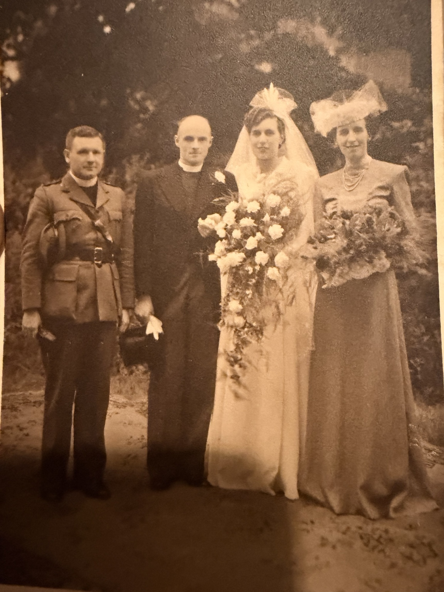
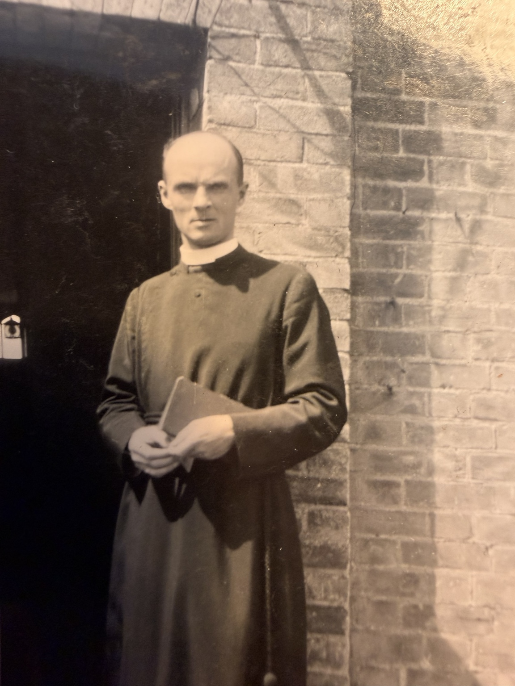

1921: 46 Gipsy Hill
Recorded as Mary Hawes, aged 2 years 4 months, a boarder in Charles S. Bradley’s household, with Walter, Nellie and the four Hawes children. The parental-survival entry says both parents alive. View the original census and household transcription →

Biography
Marriage to Rev Grant MacLaren
On 8 November 2026, Antony Greenfield identified the Reverend Grant MacLaren as Mary’s husband and supplied his portrait. A subsequently supplied wedding card records their marriage at Christ Church, Gipsy Hill, London, on 16 June 1945, and gives their address as The Vicarage, Penn Fields, Wolverhampton. The card prints his surname as MacLaren, correcting the earlier family spelling McClaren. His life dates, denomination and exact clerical appointment remain to be established.
Family history
Mary Hawes was the youngest of the four children identified by the family as children of Walter Joseph William Hawes and Frances Ellen “Nellie” Creese. A birth-index entry was registered in Croydon, Surrey, during the first quarter of 1919, with mother’s maiden surname Creese (volume 2A, page 433). The index does not establish an exact birth date or independently identify her father. Family testimony identifies her husband as the Reverend Grant MacLaren. Marriage details and their later family history remain to be documented.
Research and verification
The current tree entry is based on Civil birth index, Croydon, 1919 Q1; family identification. Original certificates, census records and other first-hand documents are still needed to expand this account.
Documents & photographs

Christ Church, Gipsy Hill; original photograph and printed marriage card.
View photograph and card →
Mary’s husband, photographed in clerical dress.
View photograph and notes →References and research
Source: current family tree export and accompanying family research. Original documentary verification remains outstanding.
Original evidence is distinguished from GEDCOM assertions and family recollections. Personal details of living descendants are withheld.